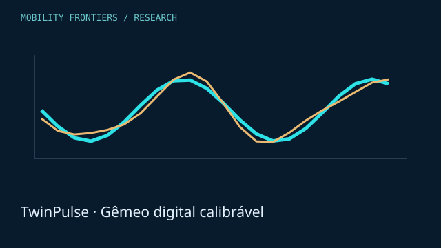

TwinPulse · Gêmeo digital calibrável
Previsão com dados reais, incerteza mensurada e cenários de capacidade viária.

Protótipo de pesquisa independente. Contagens reais atribuídas; movimentos e intervenções sintéticos. Não é um gêmeo operacional certificado.
Pesquisa que pode evoluir para produto
Hipótese de inovação
Conectar o erro observado a um simulador auditável: previsão de tráfego, intervalos calibrados e teste de capacidade no mesmo laboratório. A contribuição é a integração experimental, não um novo algoritmo de previsão.
Implementação atual
Regressão ridge usa hora, dia da semana e volume observado na hora anterior. Um período posterior calibra os intervalos; outro período, ainda mais recente, mede erro e cobertura. As previsões alimentam um corredor de três trechos com conservação de veículos.
Experimentos e validação
2.016 contagens reais; treino, calibração e teste cronológicos sem embaralhamento. Compara ridge e persistência em 403 observações de teste e mede cobertura efetiva, inclusive quando fica abaixo do alvo de 90%.
Limites e resultados negativos
Validação real apenas de contagens em um contador da I-94, não de viagens, frotas ou intervenções. A previsão usa o lag real: não é uma previsão livre de múltiplas horas. Filas, capacidades e pontos visuais são hipotéticos. Dependência temporal impede prometer cobertura nominal.
Experimente as decisões
Selecione uma configuração e execute para carregar o resultado Python correspondente. A reprodução mostra a evolução temporal; não executa Python no navegador.
Loading…
Compare referências e propostas
No teste cronológico: RMSE ridge 463.0 versus persistência 814.8 veículos/h. A cobertura ridge foi 87.3%, abaixo do alvo de 90%. Ganho pontual não estabelece generalização para outras cidades.
Dados, hipóteses e procedência
Contagens reais: Hogue (2019), Metro Interstate Traffic Volume, UCI, DOI 10.24432/C5X60B. Licença CC BY 4.0. Amostra: últimos 2.016 timestamps disponíveis; duplicatas meteorológicas removidas mantendo a primeira linha. Horas ausentes não são imputadas.
Reproduza ou modifique
Extraia o ZIP e use Python 3.10 ou superior. Sem dependências externas. O README documenta parâmetros, seeds, unidades e limites.
python twinpulse.py --output report.json
python -m unittest discover -vO próximo avanço a demonstrar
Adicionar múltiplos sensores, detecção de drift, calibração temporal adaptativa e validação independente de tempos de viagem antes de decisões de infraestrutura.
Inspecione a evidência
Parâmetros, resultados individuais e limitações
Loading…